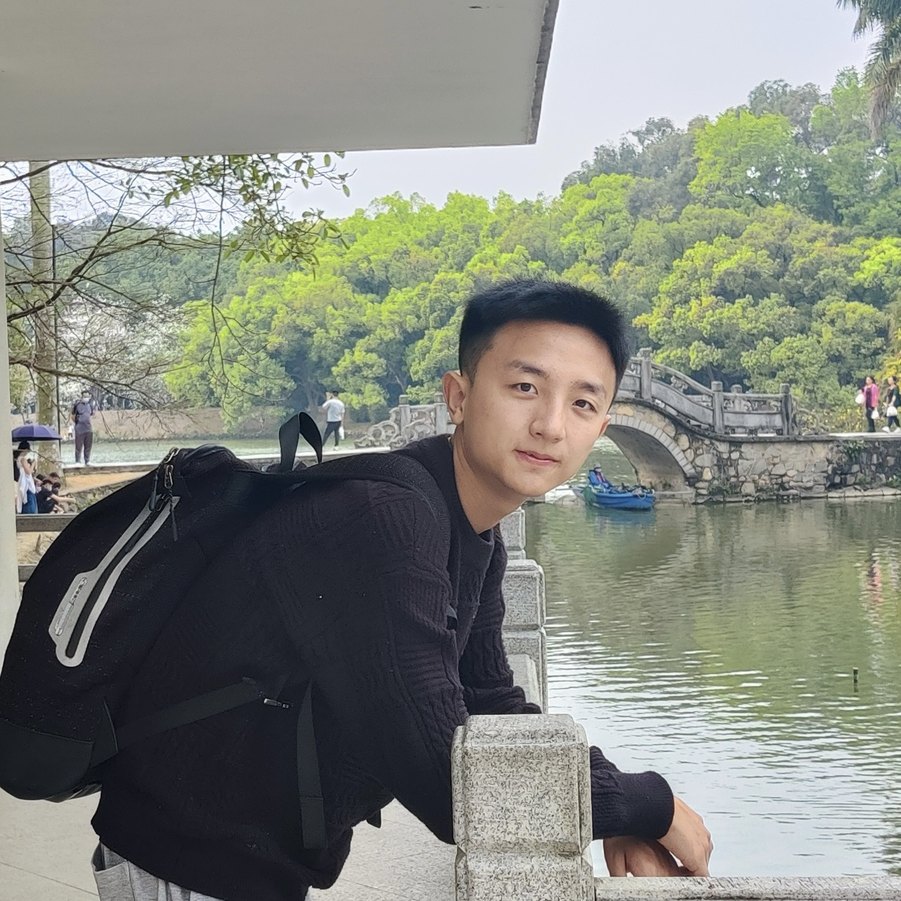

Profile
访客计数:
0
/ PV
0

Wenhong Huang (黄文弘)
I work on vision-language models and multimedia security, with a focus on watermarking, copyright protection for AIGC models, image restoration, and transferable adversarial attacks.
Recent Publications
-
Wenhong Huang, Yunshu Dai, Jianwei Fei, Fangjun Huang,
“New Visible Watermark Protection Mechanism Based on Information Hiding”,
IEEE Transactions on Information Forensics and Security (TIFS),
20: 7764–7776, 2025.
Code:
https://github.com/Aitchson-Hwang/adversarial_visible_watermarking
Paper: https://ieeexplore.ieee.org/abstract/document/11095771 -
Wenhong Huang, Yunshu Dai, Jianwei Fei, Fangjun Huang,
“MNet: A Multi-Scale Network for Visible Watermark Removal”,
Neural Networks,
2025, 183: 106961.
Code:
https://github.com/Aitchson-Hwang/MNet
Paper: https://www.sciencedirect.com/science/article/abs/pii/S0893608024008906 - Jiayuan Chen, Wenhong Huang (黄文弘), Fangjun Huang, “High-performance audio adversarial attacks guided by speaker information” (说话人信息引导的高性能音频对抗攻击), Journal of Software (软件学报), Accepted (已录用), In Chinese (中文论文).